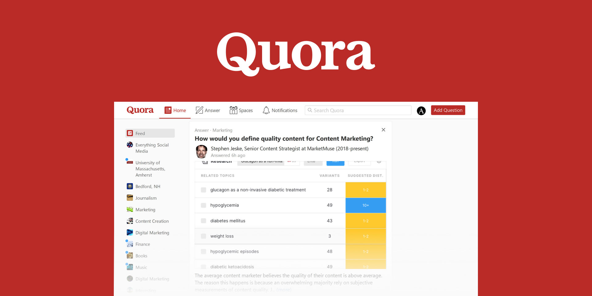
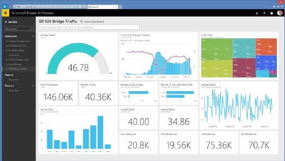
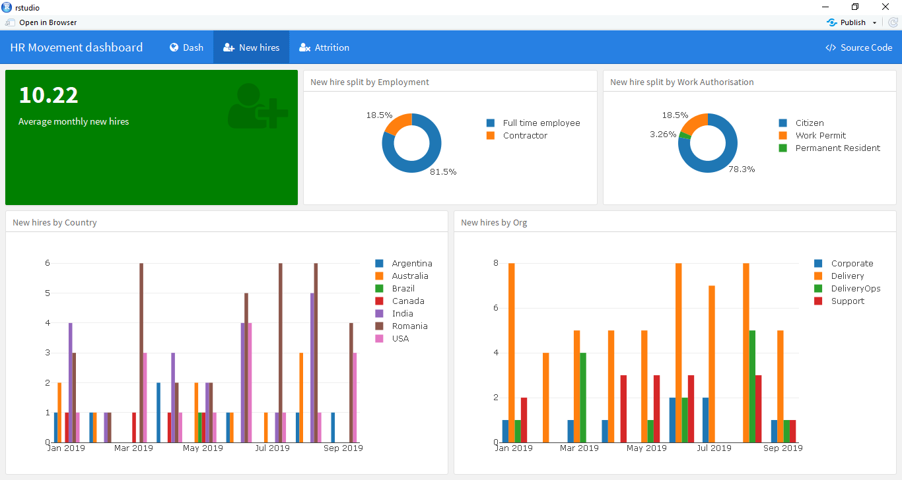

Dinesh Kumar
Application Developer, Front End
Specialties : HTML | CSS | Javascript | Bootstrap | SASS | Selenium | Automation | SQL | Python | Tableau | R | Macros | CRM | Sales and marketing | Educational Counsellor | Content Writer | Time Manager | Great Adviser | Very Active on Social Media |
Featured Projects

QUORA-AUTOMATION (Python and Selenium)
Automated all my 27 Quora spaces which shares content and generates revenue. The project automates all of the below steps:
- Opens Quora and enters credentials
- Navigates to space
- Adds 20 suggestions to Queue
- Closes the browser

INTERNATIONAL CONSUMER GOODS SALES ANALYSIS (Power BI and Excel)
Analysed the data and created following interactive dashboards
- Sales and Gross Profit by FY Qtr.
- Sales, GP% and Gross Profit by Category and FY Qtr.
- Sales by date, chain, State & Country, Category & Chain.

Sales Analysis (R programming)
Analysed sales of international customer goods and created objectives and visualisations of the following:
- Who is the best customer?
- Which item name has the most demand in the sales?
- In which year the revenue is higher?
- What are the categories and subcategories of items?
- From each country, which state is leading in sales?
Other Projects:
- Battle of Neighbourhoods in Python
- BMI Calculator in C
- LPU GPA calculator in Android Studio
- CGPA Predictor using Excel
Work Experience
See my complete work history on LinkedIn
Tata Consultancy services October, 2020 - Present Tata Consultancy services January, 2020 - October, 2020 Extramarks Education India Pvt. Ltd. September, 2018 - May, 2019 Btech, Computer Science. 2015-2019 CGPA: 8.38 MPC. 2013-2015 Percentage: 94.8% SSC. 2000-2013 Points: 9.0 Application Developer, Front End
Assistant System Engineer
Business Development Executive (Intern)
Education
Lovely Professional University - Punjab
Sri Gayatri Educational Institutions - Hyderabad
Johnson Grammar School - Hyderabad